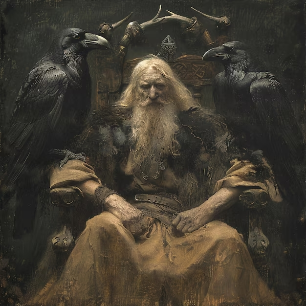
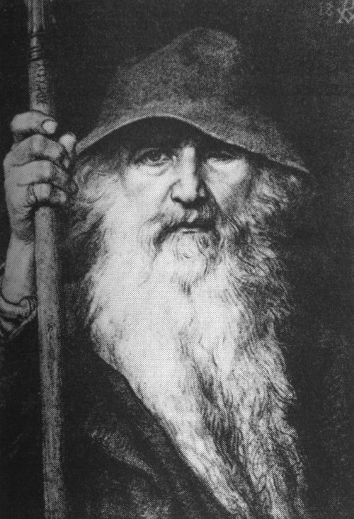
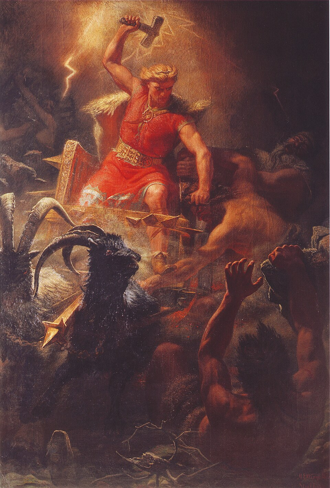
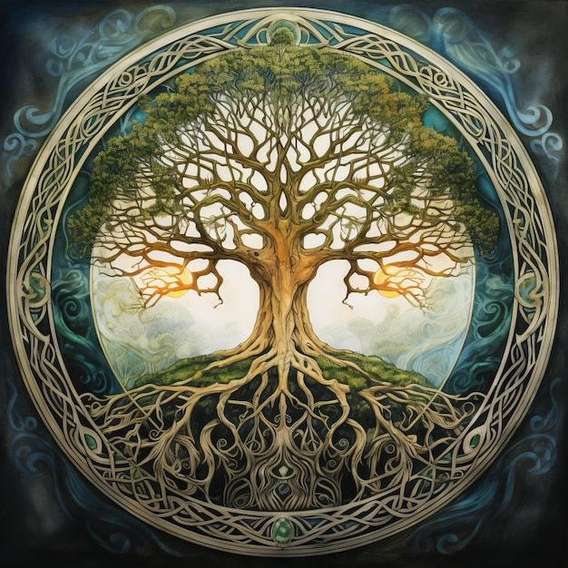
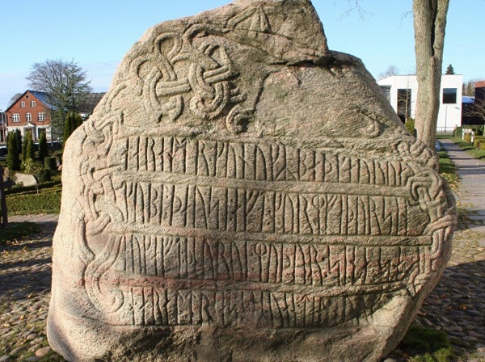

Галерея
Изображения богов, миров и рунических символов. Нажмите на изображение для увеличения.
Один

Один на троне Хлидскьяльв
с воронами Хугин и Мунин. Художник: Георг фон Розен (XIX век).

Один-странник
в плаще и шляпе, с посохом. Образ из «Старшей Эдды».
Тор

Тор с Мьёльниром
бой с великанами. Художник: Мортен Эскиль Винге.
Иггдрасиль

Ясень Иггдрасиль
девять миров и животные у корней.
Руны

Рунический камень из Еллинга
Дания, X век.